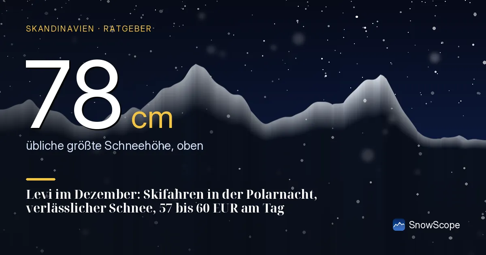

Levi im Dezember: Skifahren in der Polarnacht, verlässlicher Schnee, 57 bis 60 EUR am Tag
Levis Dezemberschnee hat sich in den letzten Jahrzehnten tatsächlich verbessert und widerlegt den Trend bei vielen Alpenresorts. Die letzten 15 Winter zeigen, dass jede einzelne Weihnachtswoche mindestens 30 cm Schnee hatte, verglichen mit 87 % in den ersten 15 Wintern unserer Aufzeichnungen. Planen Sie eine Reise zwischen Mitte Dezember und Neujahr ein und Sie haben gute Chancen auf verlässlichen, kalten, präparierten Schnee.
Die Live-Schneeprognose für Levi in der SnowScope-AppSchneehöhen, Pulverschnee-Alarme und 3D-Karte, gratis.
Warum Levi im Dezember funktioniert
Levi ist ein Fjell: ein niedriger, gerundeter Lappland-Hügel, der nur 333 m vom Tal zum Gipfel ansteigt. Weil er glatt und nicht sehr hoch ist, behandeln unsere 46 Winter Schneegeschichte ihn als eine Zone. Die Schlüsseltatsache ist die Kontinuität: in keinem dieser Winter war der Boden am 15. Dezember schneefrei, und die Schneetiefe über den Fjell verändert sich wenig mit der Höhe.
Diese Kontinuität kommt aus Lapplands Geografie. Weit im Norden bedeutet ein wärmerer Winter nicht schneefrei, sondern nasseren Schnee. Levi liegt auf 67,8°N, wo selbst ein milder Dezember kalt genug bleibt, um eine Basis aufzubauen und zu erhalten.


Drei Wochen, drei Chancen
Anfang Dezember (1.–7. Dez.) ist ein Risiko: nur 57 % der Winter hatten bis dahin 30 cm oder mehr. Der typische erste Tag mit 30 cm ist der 27. November, aber das variiert. Wenn du in der ersten Woche fährst, prüfe die Bedingungen genau und bring Geduld mit.
Mitte Dezember (15.–21. Dez.) ist sicherer. Der Anteil der Winter mit 30 cm steigt auf 83 %. An einem typischen 15. Dezember zeigt SnowScope 38 cm. In einem dünnen Jahr (1 von 10) erwarte 26 cm; in einem tiefen Jahr 52 cm. Diese enge Spanne ist typisch für die Fjelle: selten bekommen sie Pulverschneetiefe, selten werden sie schneefrei.
Weihnachtswoche: die Hochburg der Saison
Die Weihnachtswoche (22.–28. Dez.) ist Levis beste Woche des Monats. In den letzten 15 Wintern hatten alle 30 cm oder mehr. Insgesamt erreichten 91 % aller 46 Winter diese Marke. Ein typischer 24. Dezember hat 43 cm Schnee.
Komm nicht zu Levi wegen Pulverschnee. Nur 2 % der Weihnachtswochen haben 60 cm oder mehr. Stattdessen bekommst du kalten, stabilen, präparierten Schnee, der hält. Der letzte Winter brachte 55 cm am 24. Dezember.
Polarnacht und Licht
Dezember in Levi ist auch der Anfang der Polarnacht. Mitte Dezember steht die Sonne kaum noch auf, und für einen Teil des Monats geht sie überhaupt nicht über dem Horizont auf. Das Licht wird für ein paar Stunden am Nachmittag blau und rosa, und viel Skifahren geschieht in der Dämmerung oder Dunkelheit.
Pack eine gute Stirnlampe für Wanderungen zwischen den Abfahrten, warme Handschuhe und Gesichtsschutz. Die Kälte ist trocken und eindringlich. Für viele Skifahrer machen dieses seltsame Licht und die Stille der Fjelle Levi im Dezember unvergesslich.
Wie sich die Saison verändert hat
Levi ist in dieser Serie ungewöhnlich: sein Dezemberschnee ist gewachsen, nicht geschrumpft. In den ersten 15 Wintern (1980–81 bis 1994–95) lag der Dezemberdurchschnitt bei 41 cm. In den letzten 15 Wintern (2011–12 bis 2025–26) stieg er auf 45 cm. Die Verbesserung ist am deutlichsten zu Weihnachten: 87 % der Wochen hatten in der frühen Phase 30 cm oder mehr; jetzt sind es 100 %.
Dieser Trend spiegelt wider, wie weit nördlich gelegene Berge anders auf Klimawandel reagieren als die Alpen. Wärmer bedeutet nicht schneefrei; es kann nasseren Schnee bedeuten, der sich trotzdem ansammelt.
Kosten und Zeitplanung
Ein Tagespass kostet EUR 60 am Resort-Schalter oder EUR 57, wenn du mindestens 14 Tage im Voraus online buchst. Dieser Tarif läuft vom 1. Dezember bis 2. Mai und ist einer der niedrigsten Festpreise in dieser Serie. Das nahe gelegene Ylläs kostet EUR 60 normal und EUR 55,50 in der Nebensaison (vor 11. Dezember), und verkauft einen 7-Tage-Pass für EUR 254,50 in diesem Zeitfenster.
Für eine Kurzreise Mitte Dezember oder zur Weihnachtswoche ist Levis Tagestarif konkurrenzfähig. Für eine volle Woche Anfang Dezember könnte Ylläs' 7-Tage-Pass in der Nebensaison billiger sein. Wie dem auch sei, buche Lifte und Unterkunft frühzeitig: Dezember füllt sich schnell in Lappland.
Tipps für Skifahrer
- Meide die erste Dezemberwoche, wenn du nicht gerne risikierst: nur 57 % der Winter haben bis dahin 30 cm. Mitte Dezember und Weihnachtswoche sind viel sichere Wetten.
- Buche deine Unterkunft und Lifte früh. Reserviere online für EUR 57 statt EUR 60 pro Tag, wenn du vorausplanst.
- Bring Kälteschutzausrüstung mit: eine Stirnlampe für die polare Dämmerung, dicke Handschuhe, Balaclava und Sonnencreme mit hohem Schutzfaktor für die Schneeblendung.
- Wenn du abseits der Pisten auf dem Fjell unterwegs bist, prüfe die lokale Lawinen- und Wettermitteilung, bevor du die markierten Abfahrten verlässt.
- Der letzte Winter (2025–26) hatte 55 cm am 24. Dezember. Selbst in einem dünnen Jahr (1 von 10) kannst du mit 26 cm am 15. Dezember rechnen, genug für die präparierten Abfahrten.
Zu diesen Zahlen
Die Schneehöhen der Skigebiete sind der meiste Schnee in den oberen Hängen am angegebenen Tag; es sind Schätzungen für eine Fläche, keine Messung an einem Punkt. Prognosen können sich ändern. Lies vor dem Freeriden immer den offiziellen Lawinenlagebericht.
Offizielle Lawinenlageberichte: EAWS – European Avalanche Warning Services
Diesen Bericht zitieren
Für Forschung, Lehre oder Presse: Zahlen und Grafiken sind unter CC BY 4.0 mit dieser Quellenangabe frei nutzbar.
SnowScope (2026), Levi im Dezember: Skifahren in der Polarnacht, verlässlicher Schnee, 57 bis 60 EUR am Tag, https://snowscope.app/blog/de/2026/11/levi-december-skiing-polar-night-snow-price.html, abgerufen am 2026-11-14
SnowScope (Atlas Labs). (2026, November 14). Levi im Dezember: Skifahren in der Polarnacht, verlässlicher Schnee, 57 bis 60 EUR am Tag. SnowScope snow reports. https://snowscope.app/blog/de/2026/11/levi-december-skiing-polar-night-snow-price.html
BibTeX
@misc{snowscope2026levidecemberskiingpolarn,
author = {{SnowScope (Atlas Labs)}},
title = {Levi im Dezember: Skifahren in der Polarnacht, verlässlicher Schnee, 57 bis 60 EUR am Tag},
year = {2026},
month = nov,
howpublished = {\url{https://snowscope.app/blog/de/2026/11/levi-december-skiing-polar-night-snow-price.html}},
note = {Published 2026-11-14 13:29 UTC; accessed 2026-11-14}
}· CC BY 4.0 · Methoden, Daten und Werkzeuge →
Levi: Schnee und Temperatur nach Höhe, dieser Winter vs letzter (Werkzeuge) →
Levi folgen
Gratis: eine Nachricht, wenn Neuschnee kommt, und jeden Morgen die Vorhersage.